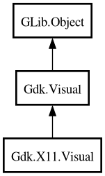

Visual
Object Hierarchy:

Description:
[
CCode ( type_id =
"gdk_x11_visual_get_type ()" ) ]
[
GIR ( name =
"X11Visual" ) ]
public class Visual :
Visual
Content:
Creation methods:
Methods:
Inherited Members:
All known members inherited from class Gdk.Visual
All known members inherited from class GLib.Object